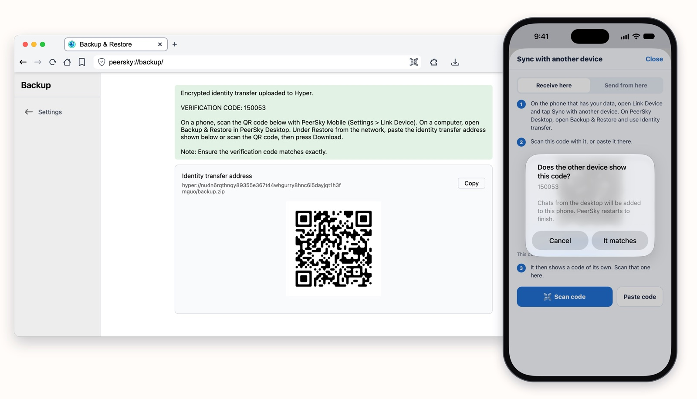
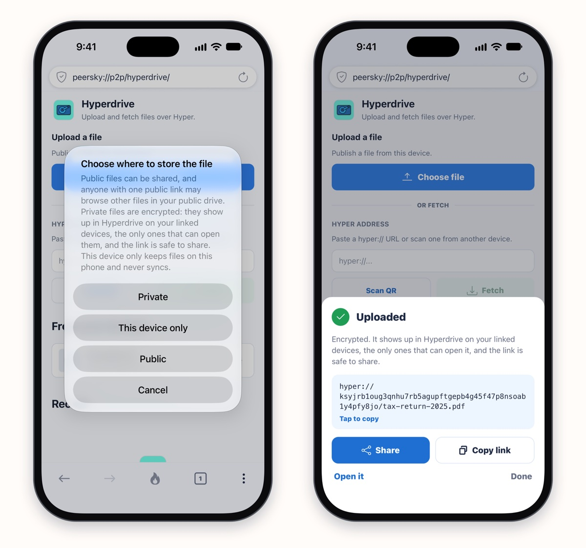
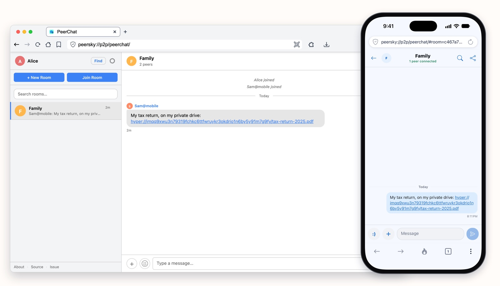
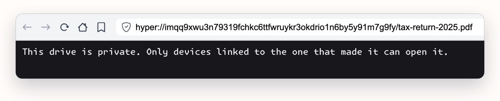
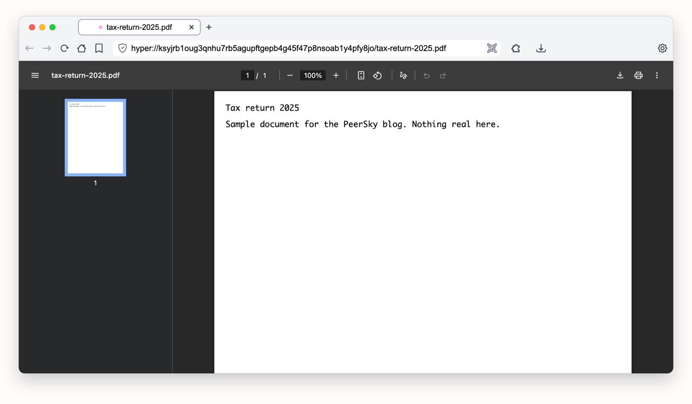

That old laptop in a drawer can be your own cloud. Link it to your phone with PeerSky once, and it keeps your private files encrypted at home. Only your devices can open them. There's no account, no server and no monthly plan, and your devices' free space is the only limit.
You need PeerSky on both devices. Get it for your computer and your phone at peersky.p2plabs.xyz.
1. Link your devices
On your phone, open Settings, then Link Device, then Sync with another device. It shows a code. On the spare laptop, open Backup & Restore, scan that code under Identity transfer and press Upload Hyper. Scan the code the laptop shows back with your phone. When both screens show the same six digits, tap It matches.

Now both devices hold the same key, and nobody else has it.
2. Save a file as Private
In Hyperdrive on your phone, tap Choose file and pick Private. The file is encrypted on your phone before it goes anywhere. There's no size limit: a two-page PDF or a whole movie, as long as your devices have room for it.

Here Sam drops the link in the family chat on PeerChat, so it's easy to find later.

How it works
Both hold the same key, from Link Device. No server in between.
For the technical details, read the docs on private drives for desktop and mobile, and on Link Device.
Someone who isn't linked
Alice is in the same chat, so she has the link too. When she opens it, her PeerSky can't read any of it.

Leave it on
Keep the spare device on, with PeerSky open, and it works like your own cloud. Sam's laptop opens the file from the link, and keeps a copy, so it still opens with PeerSky closed on the phone. It works the other way too: files you save as Private on the laptop open on your phone, on your home Wi-Fi or when you're out.

Any computer you can leave on will do: an old laptop, a desktop or a Raspberry Pi. An old phone works too, plugged in with PeerSky open.
What people use it for
Papers you need anywhere
Tax returns, a lease, a passport scan. They stay on the laptop at home, and your phone opens them when you need them.
Photos off your phone
Save them as Private and open them on the laptop. It keeps a copy, so they're there even when the phone isn't.
Big videos and archives
No size limit besides free space. Save a long video as Private on your phone and play it on the laptop.
Home Wi-Fi, no internet
Your phone and laptop find each other on the same Wi-Fi, even with the internet down.
Try it with a device you already have. Get PeerSky at peersky.p2plabs.xyz.